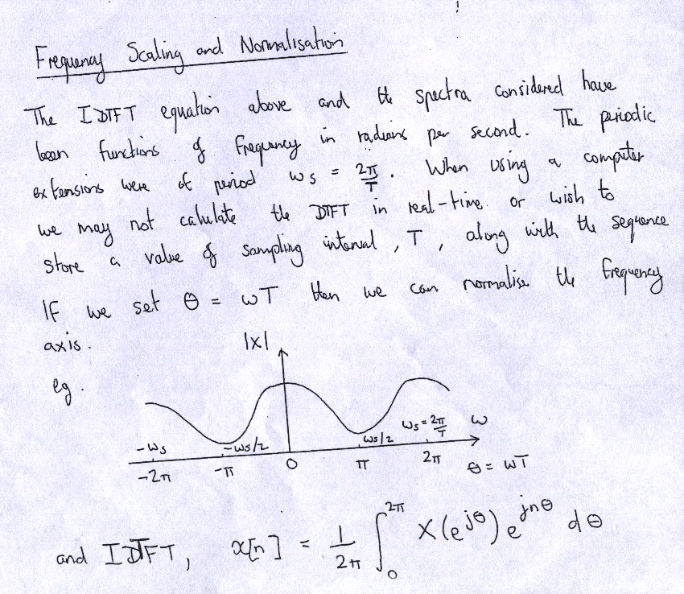
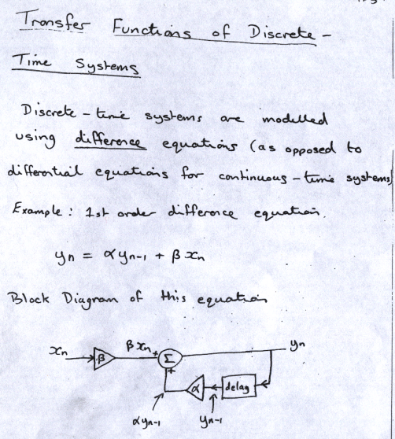
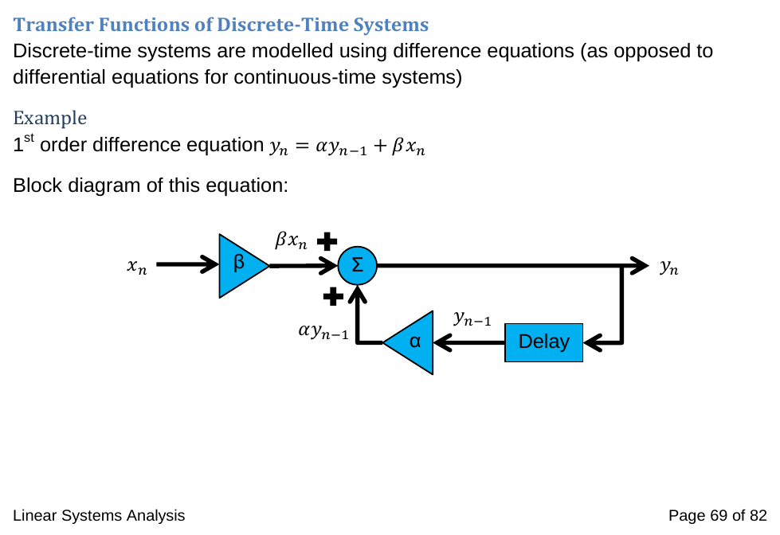

This project required the conversion of around 200 pages of handwritten Signal Analysis and Linear Systems Analysis lecture slides into digital form, including formatting of mathematical equations and drawing diagrams.
At the time both Libre Office Open Document Text and Microsoft Word docx were used to generate documents for compatibility with the professor's and university systems. An A5 landscape format was chosen and then converted to pdf's for ease of presentation during the lectures.
The original handwritten Frequency Sampling and Normalisation lecture notes:
Below is the digitised version of those notes which include:
The original handwritten Transfer Functions of Discrete Time Systems lecture notes:
Their digitised version additionally requiring reproduction of the diagram in a digital form using drawing software:
